Case file 01 · B2B retail operations · 2026
RetailPilot.
Turning stock alerts into decisions a store manager can defend, approve and learn from.
- The problem
- One reorder decision took around 30 minutes across a spreadsheet, phone calls and the ERP. Most of it went into working out whether the alert was even worth acting on.
- What I did
- I stopped designing a dashboard and designed a decision: a ranked card with its evidence, three priced options and a purchase order ready to approve.
- The outcome
- 30→3min
per decision in walkthroughs, and about 40% less money at risk in dead stock. - My role
- RoleProduct designerScopeResearch, UX, UI, systemTimeline3 monthsTeamSolo designerPlatformWeb, tablet voice
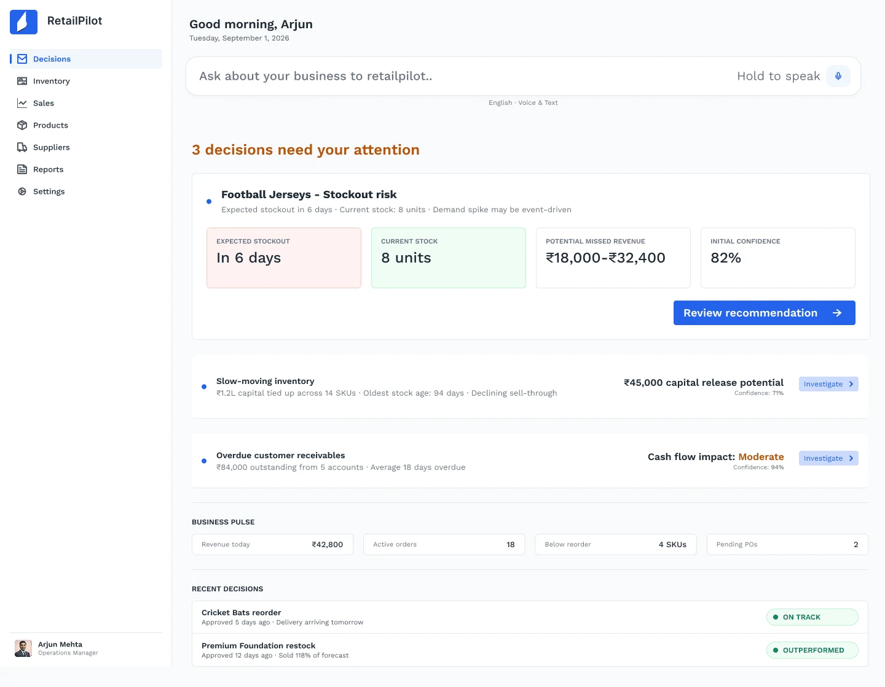
01 · The problem
The alert took two minutes. Everything after it took twenty-eight.
I shadowed the reorder process end to end. The inventory tool was good at saying a SKU was low. Everything after that happened outside it, in four places, and the manager was the only thing connecting them.
One reorder decision for a fast-moving SKU, from my shadowing notes. Durations are approximate and vary by store.
No reason to act
The alert said “low stock”. It didn’t say whether that was a problem, how big, or what to order.
The reasoning got lost
The thinking lived in a spreadsheet nobody else saw, so the owner just saw a PO and a number.
Nothing came back
Once the PO went out, nobody checked if the quantity was right. The same mistake came back next season.
02 · Research
I went to the stockroom before I opened Figma.
Most of the first month was research. I wanted to understand how a reorder actually happens, not how the tools say it should.
Contextual interviews
Store and operations managers walked me through their last few reorders, using their own sheets and WhatsApp threads.
Shadowing
I sat with managers during the morning stock check and timed each step of a real decision. That became the swimlane above.
Tool audit
I went through the inventory and planning tools Indian retailers use, and looked at where each one stops helping.
Affinity map
Notes from interviews and shadowing, grouped into five themes. Each theme became one product move.
Detection without direction
4 notesThe interpretation tax
5 notesWaiting looks free
4 notesTrust has to be earned
4 notesNothing learns
4 notesSo what
5 themes, 5 product moves21 notes, five themes. Pick a theme to see what it turned into.
Where existing tools stop
Every tool I audited was good at detecting a problem. Almost none helped size it, commit to an action or learn from the result.
| Tool | Detect | Size the cost | Recommend | Commit | Learn | Where it stops |
|---|---|---|---|---|---|---|
| Zoho InventorySMB stock and orders | At the low-stock alert. Never says what waiting costs. | |||||
| UnicommerceMarketplace operations | At the order. Built to process transactions, not judge them. | |||||
| IncreffBrand merchandising | At the planning team. Assumes a planner reads the output. | |||||
| Tally and a spreadsheetWhat most stores use today | At the record. It only looks backward. | |||||
| RetailPilotThis project | It doesn’t. The outcome feeds the next decision. |
● covered · ◐ partly · ○ not covered. My reading of each tool, from the audit.
“Mere paas kaunsa stock pada hai jo bik nahi raha, aur usmein mera kitna paisa phansa hua hai?”
“Which of my stock is sitting unsold, and how much of my money is stuck in it?” The question he actually asks, out loud, on the shop floor.
Arjun Mehta · Operations manager, multi-category sports retail · Uses Tally, Excel, WhatsApp, supplier calls and an ERP
- Don’t run out of what’s selling during a local event
- Don’t lock cash in stock that sits for months
- Have a clear answer when the owner asks “why this many?”
- Alerts tell him what’s low, not what to do
- He rebuilds the same numbers in a sheet every week
- Supplier minimums push him to over-order
- He never finds out if an order was the right size
03 · Key insights
What I learned that changed the brief.
Managers didn’t need more alerts. They needed a defensible reason to act.
Every manager could tell me what was low. None could tell me, without a spreadsheet, whether it was worth acting on today.
Shaped → The decision inbox
The expensive mistakes came from reading a spike as a trend.
A tournament or a festival pushes demand up for a week. Ordering as if it would last was where the dead stock came from.
Shaped → The analysis screen
Waiting never had a price.
Putting a decision off always felt free, because no tool showed what a week of doing nothing would cost.
Shaped → “Wait 7 days” as a real option
Nobody trusts a number they can’t trace.
Managers rejected forecasts that missed once. They would accept an estimate if they could see where it came from and how sure it was.
Shaped → Evidence labels on every input
04 · Key design decisions
How might we design a recommendation people can argue with?
An answer you can’t question is an answer you can’t trust. The first decision was about the first screen: what the manager sees before anything else.
How might we make the first screen about what to do, not what happened?
Open on decisions, ranked by rupees at stake
The home screen is an inbox. Each card is one decision, sorted by the money at risk and the time left to act, with one primary button.
Trade-off: the overview charts moved to a separate reports page. Some managers missed them at first.
05 · User flow
Six steps, and a loop back to the start.
The main path goes from a ranked decision to an approved PO. The outcome step feeds back into the model. Voice is a second way in from the shop floor.
The outcome recalibrates the model, so the next morning’s inbox is a little more accurate.
Hold to speak on the shop floor, in English or Hinglish → an answer in rupees with a recommendation → the same evidence and scenario screens.
06 · Iterations
The first two directions looked finished. Both failed.
I designed two complete home screens before the inbox. Both tested badly with managers, and I learned more from them than from anything that worked.
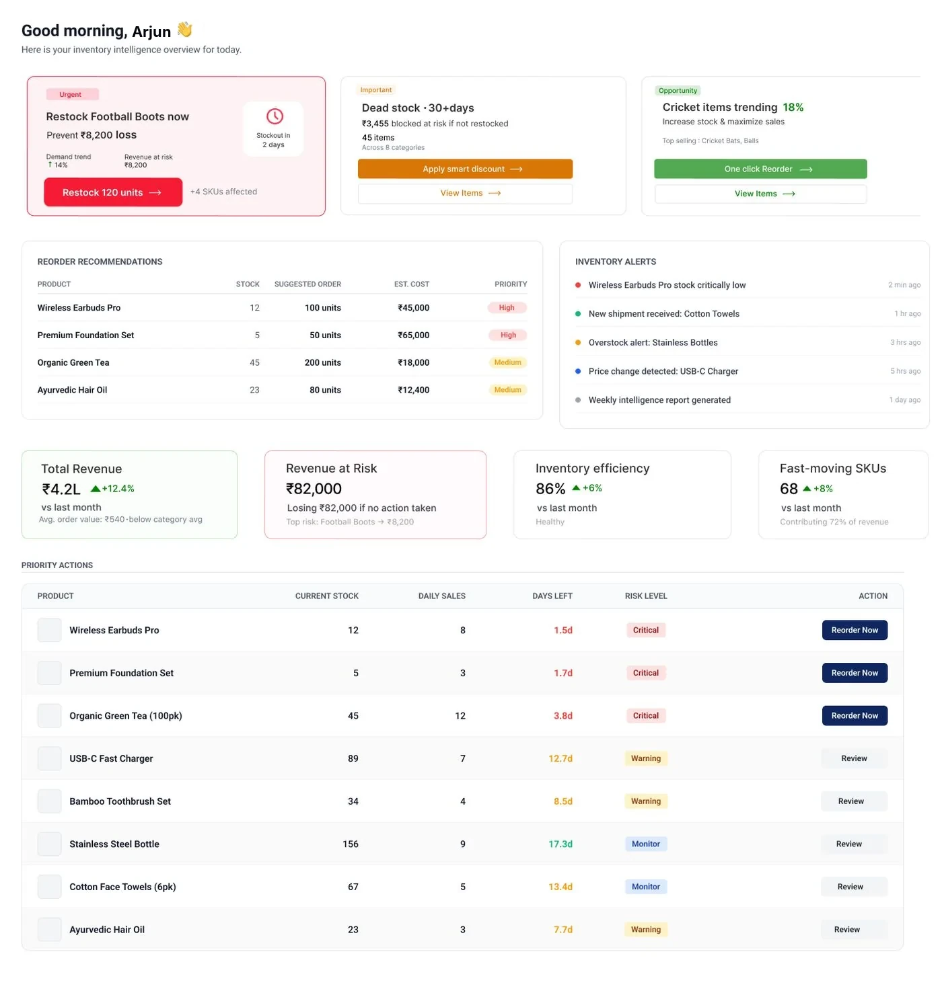
An alert feed, sorted by colour
“Good morning, Rajesh” opened on three severity cards, then recommendations, then alerts, then a priority table.
- 1Three cards, equal weightCritical, warning and opportunity sat side by side at the same size, so nothing was clearly first.
- 2The same SKUs, three timesEach product showed up in recommendations, alerts and the priority table.
- 3“Review” was just navigationEvery row ended in a link to another page. No quantity, no cost of waiting.
What it taught me: one list, ranked once, with the action on the card itself.
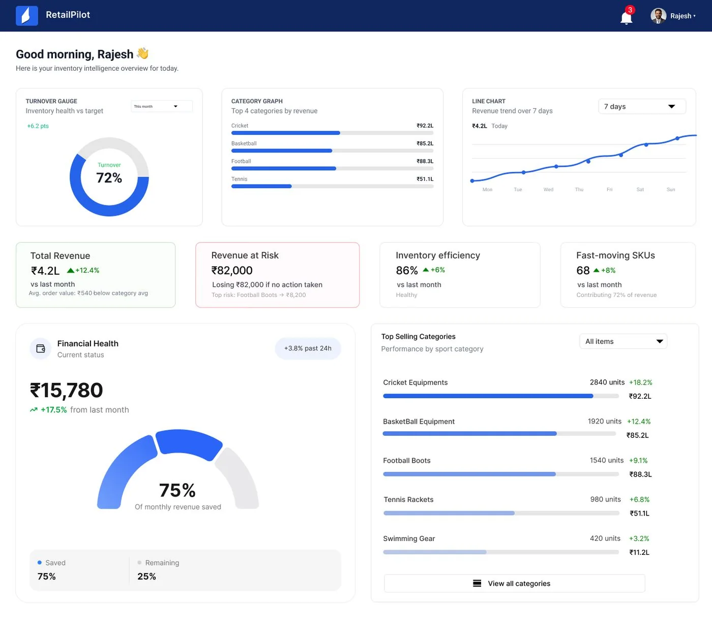
A dashboard that shows everything
The second home screen led with charts and summary numbers, with the decisions further down.
- 1It answered the wrong questionThe charts said how the business was doing. What to do today sat below the fold.
- 2₹82,000 at risk, and no actionThe biggest number on the screen had nothing next to it to act on.
- 3“75% of monthly revenue saved”Saved from what? The number never said what it was measured against.
What it taught me: charts moved to reports. The first screen is decisions only.
Before and after
Drag across to compare the alert feed with the final inbox at the same size.
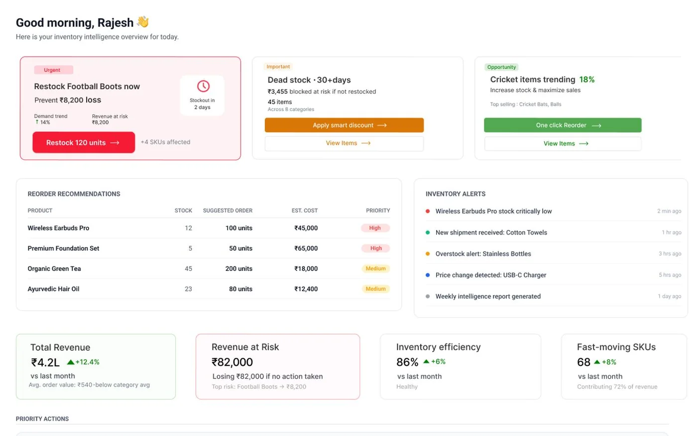
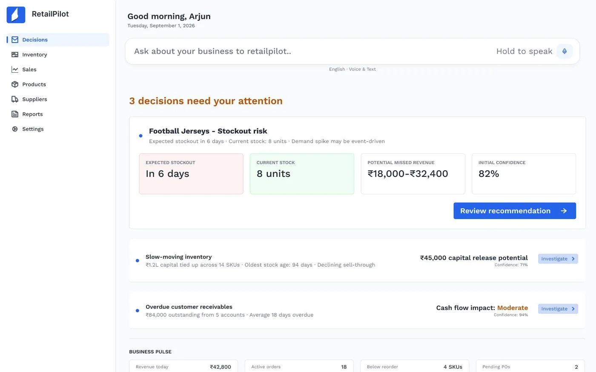
07 · Final design
One decision, from the inbox to the outcome.
The full path for one case: football jerseys running low during a local tournament. Step through it one screen at a time.
Step 1
The day starts with decisions, not charts
The manager starts the day with a short list of decisions, not a wall of charts. Each one shows the money at stake and how sure the product is.
Step 2
What we know, and how sure we are
Before recommending anything, the product shows the evidence behind the decision, with every input labelled by where it came from.
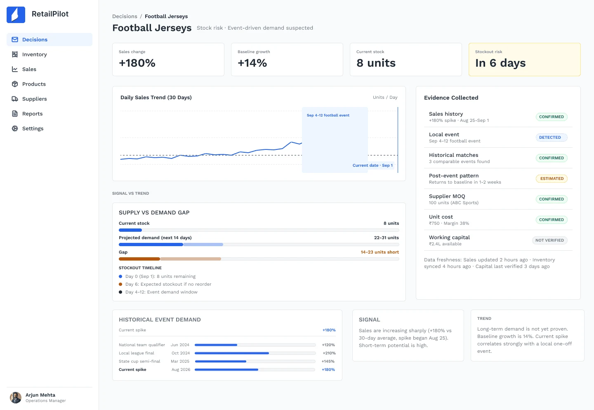
Step 3
Why the recommendation is cautious
The analysis puts the spike in context, so the manager can see why the order is sized for the event and not for a new normal.
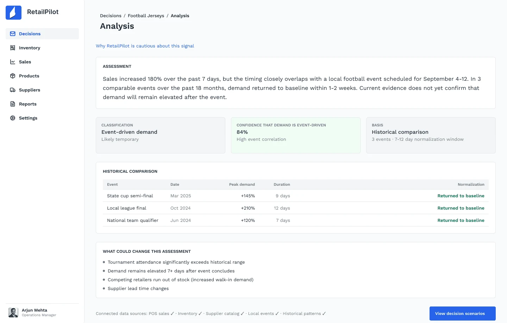
Step 4
Wait, 25 or 100 units
Three priced options side by side, including doing nothing.
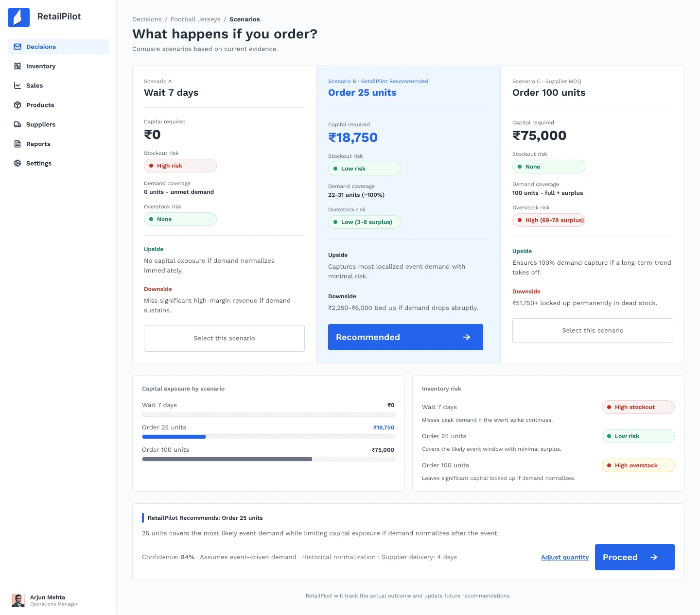
Step 5
The manager stays in control
The purchase order is drafted from the chosen option. Nothing goes to the supplier until the manager approves it.
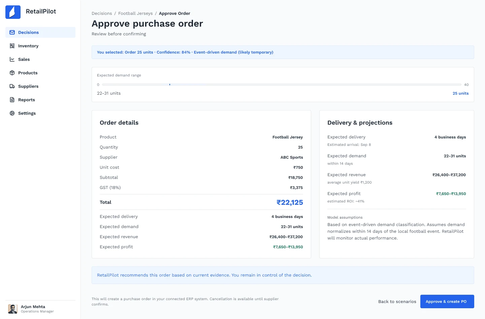
Step 6
Predicted vs actual
Two weeks later the decision reports back on its own: what was predicted, what sold, and what that changes for the next decision.
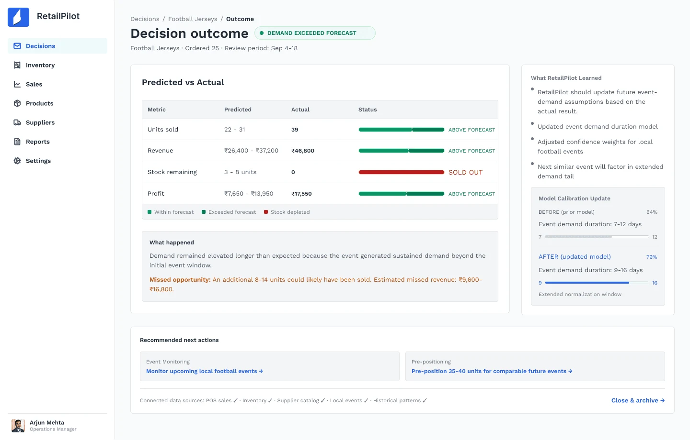
08 · Voice mode
Ask it the way you’d ask a colleague.
Managers are on their feet, between the stockroom and the counter. Voice lets them hold a button and ask in English, Hindi or both.
“Mere paas kaunsa stock pada hai jo bik nahi raha?”
Voice is a shortcut into the product, not a separate one.
Step 1
Ask in English, Hindi or both
The transcription shows first, so it can be fixed before it’s sent.
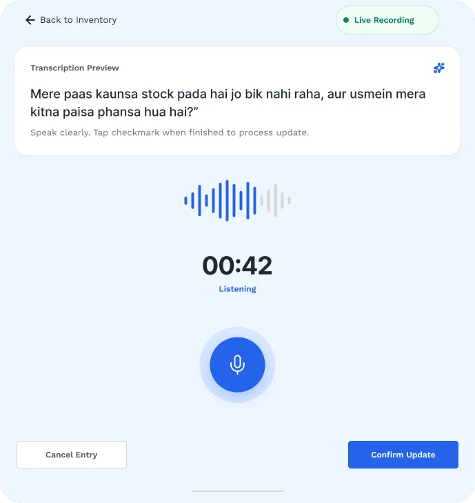
Step 2
The answer comes back in rupees
Answers first, with one recommendation, and links into the same evidence and scenario screens as the main flow.
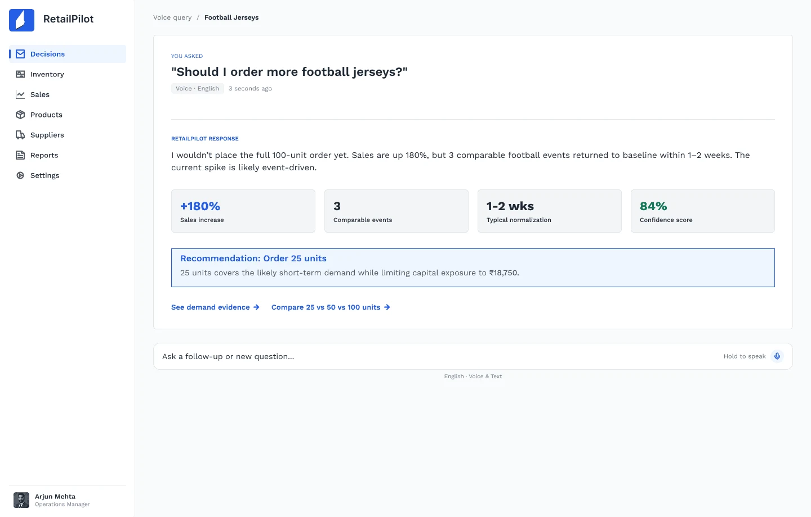
Step 3
Which stock is sitting unsold
The answer to the question Arjun actually asks: how much money is stuck in stock that isn’t selling.
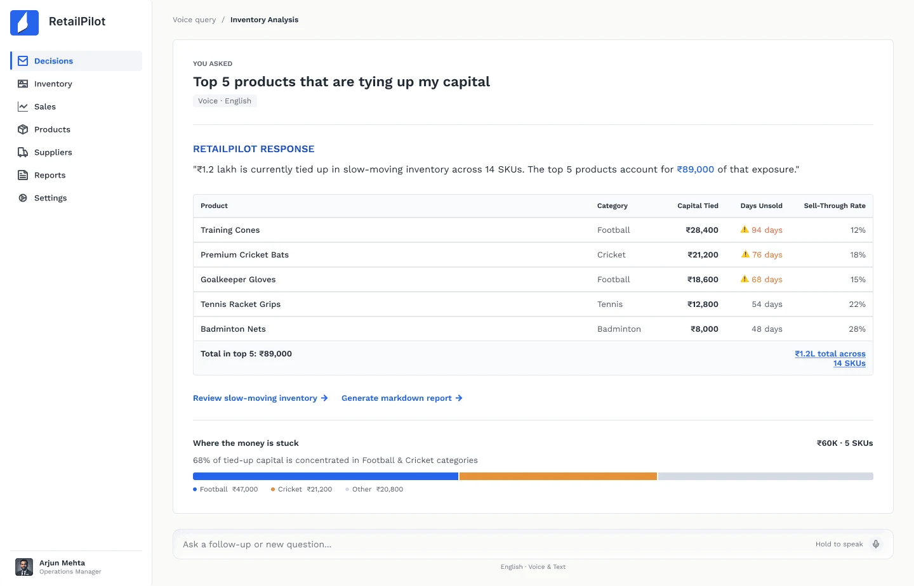
Design system
Colour means one thing each, and never on its own.
Every colour pairs with a word, so meaning survives a black-and-white printout or colour blindness.
From the POS or ERP. Hard data.
A pattern the model found in the data.
A projection, shown as a range.
Came from a person, like a supplier message.
09 · Impact
Faster, and harder to get wrong.
From walkthroughs with managers, on decisions they had already made by hand.
10 · Reflections
What I’d tell myself on day one.
Cautious is a design decision
The model being careful wasn’t a data science detail. How the screen explained that caution decided whether a manager trusted it.
Dashboards are fun to design and slow to use
Direction 2 was the most satisfying thing I made. It was also the one that put the most work back on the manager.
Language is part of the interface
Hinglish voice queries weren’t an edge case. Designing for how people actually talk changed which questions the product had to answer.
I’d test the evidence labels with owners, not just managers, since they’re the ones the reasoning has to convince. I’d also design for stores running several suppliers for the same SKU, which I scoped out.